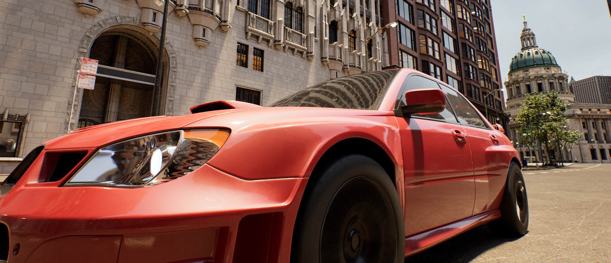
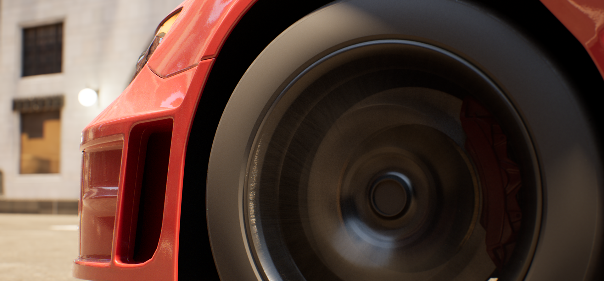
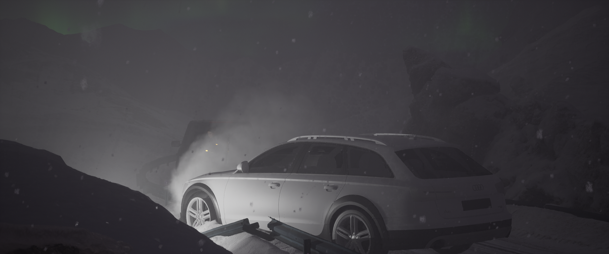
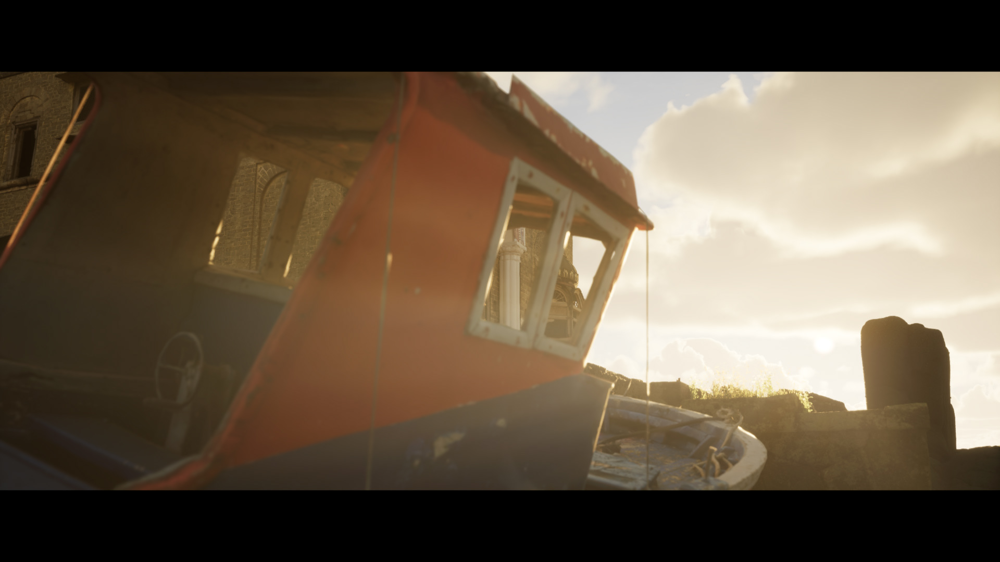
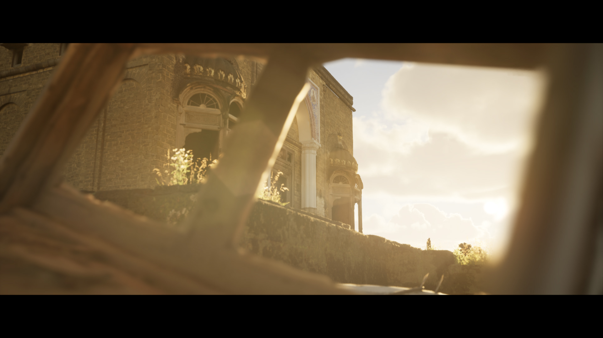
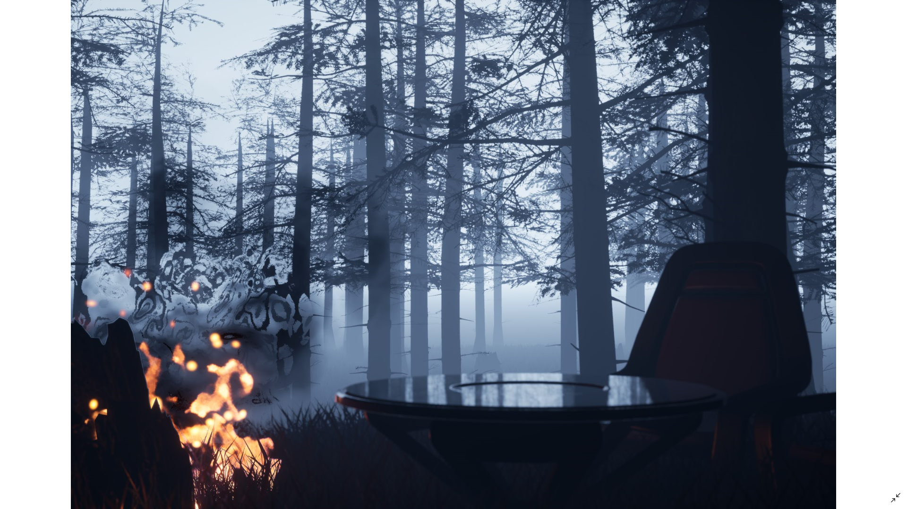

06 / Stills
Static Cinematic Shots
Stills pulled from personal environment work, framed to isolate lighting and camera placement on their own.
Unreal Engine 5Composition
Here are stills from my environment work, framed to get a clearer read on lighting and camera placement outside of a moving shot. Every environment in these stills is personal work built on Unreal Engine 5.







